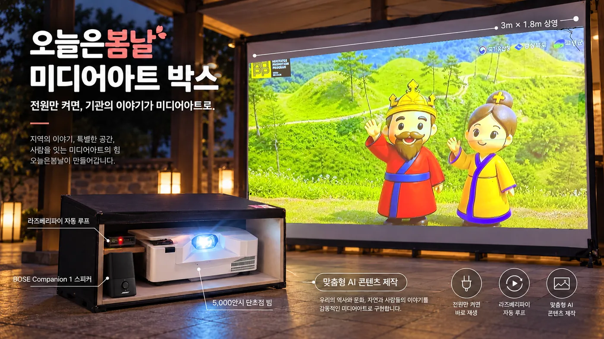
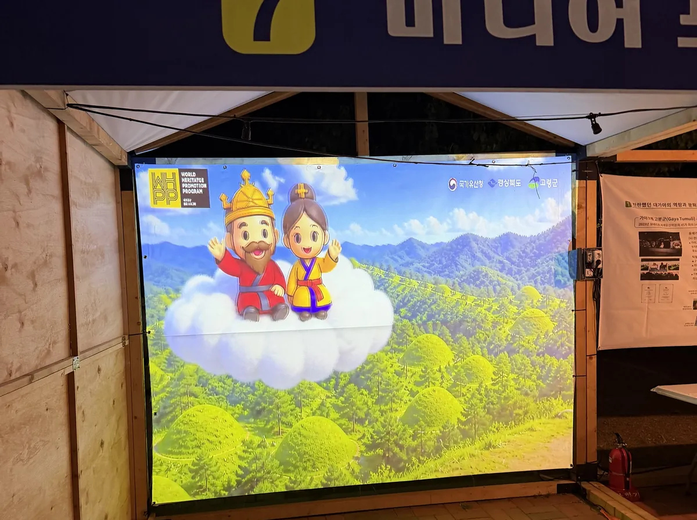
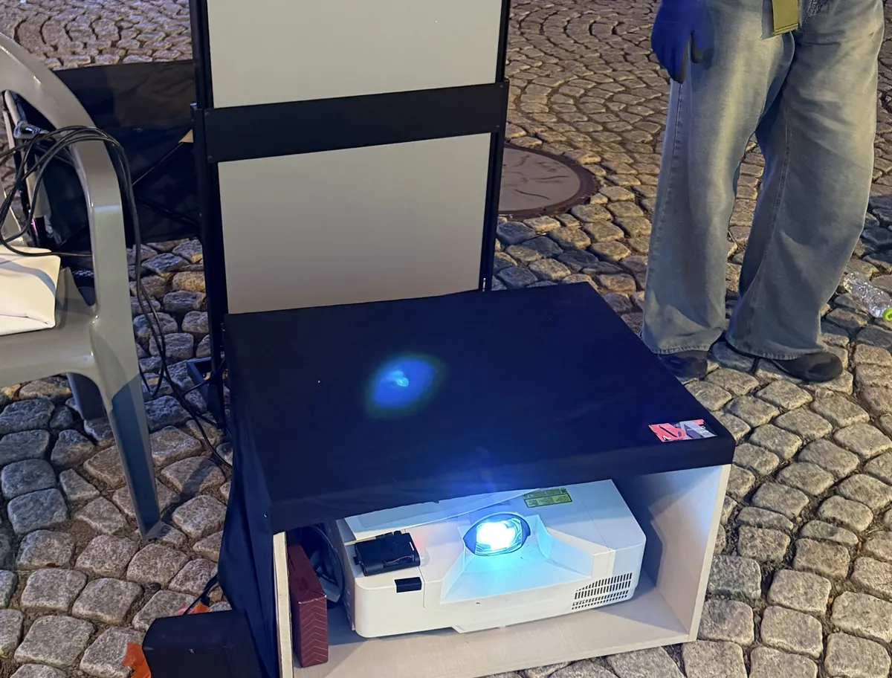

미디어아트 렌탈은 며칠부터 빌릴 수 있나요?
3일부터 빌려 드립니다. 설치와 철거에 각각 반나절이 걸리므로 행사가 하루뿐이어도 앞뒤 날을 포함해 3일로 잡습니다. 축제처럼 여러 날 이어지는 행사는 기간 전체로 계약하시는 편이 하루 단가가 낮습니다. 기간과 장소, 설치 방식에 따라 값이 달라져 일정 확인 후 산정합니다.
Kit
한 벌이 상자 하나입니다. 따로 빌리실 것이 없습니다.

| 빔프로젝터 | 5,000안시 단초점 · 천장 설치 또는 바닥 설치 |
|---|---|
| 소리 | BOSE 스피커 · 야외에서 화면만 돌면 사람이 서서 보지 않습니다 |
| 재생 | 봄날 플레이어 · 미니 PC · 전원만 켜면 바로 재생, 멈추면 스스로 되살아납니다 |
| 상영 크기 | 3m × 1.8m 기준 · 현장 여건에 따라 조정 |
| 대여 기간 | 3일부터 · 축제처럼 여러 날 이어지면 기간 전체 계약이 하루 단가가 낮습니다 |
| 콘텐츠 | 기관 이야기로 맞춤 제작 · 보유 영상은 화면 규격에 맞춰 재출력 |
Where
화면을 새로 사기에는 짧고, 빈 벽으로 두기에는 아까운 자리입니다.
Proof
2026 고령 국가유산 야행 미디어 포토존. 사진 속 상자가 지금 빌려 드리는 것과 같습니다.


영상이 없어도 됩니다. 기관의 이야기를 받아 미디어아트로 만들어 넣어 드립니다. 저희는 영상 편집이 아니라 코드로 만들기 때문에, 같은 작품을 현장 화면의 비율과 해상도에 맞춰 그 규격 그대로 다시 출력합니다. 대구 여성기업이며 공공기관 우선구매 대상이고, 직접생산확인증명서를 보유해 중소기업자간 경쟁입찰에도 바로 참여합니다.
FAQ
담당자분들이 대여 전에 가장 많이 확인하시는 내용입니다.
3일부터 빌려 드립니다. 설치와 철거에 각각 반나절이 걸리므로 행사가 하루뿐이어도 앞뒤 날을 포함해 3일로 잡습니다. 축제처럼 여러 날 이어지는 행사는 기간 전체로 계약하시는 편이 하루 단가가 낮습니다. 기간과 장소, 설치 방식에 따라 값이 달라져 일정 확인 후 산정합니다.
5,000안시 단초점 빔프로젝터와 스피커, 봄날 플레이어(미니 PC)가 상자 하나에 들어갑니다. 전원 한 가닥만 꽂으면 켜지고, 행사가 끝나면 그대로 거둡니다. 상영 화면은 3m × 1.8m 기준이며, 현장 여건에 따라 조정합니다.
그 자리를 위해 만든 구성입니다. 걸 화면이 아예 없는 천막, 부스, 빈 벽에 상영합니다. 단초점이라 화면에서 멀리 물러설 자리가 없는 좁은 공간에서도 3m 화면이 나옵니다. 천장에 달아도 되고 바닥에 놓아도 됩니다.
영상이 없어도 됩니다. 기관의 이야기를 받아 미디어아트로 만들어 넣어 드립니다. 이미 가지고 계신 영상이 있으면 화면 규격에 맞춰 다시 출력해 담아 드립니다. 저희는 영상 편집이 아니라 코드로 만들기 때문에 어떤 화면 비율에도 그 규격 그대로 다시 출력됩니다.
필요 없습니다. 봄날 플레이어는 전원만 켜면 바로 재생하고 계속 돕니다. 화면이 멈추면 스스로 알아채고 되살아납니다. 현장에 키보드도, 다룰 줄 아는 담당자도 없어도 됩니다.
오늘은 봄날은 대구광역시 수성구에 사업장을 둔 여성기업입니다. 대구·경상북도를 우선으로 부산광역시·경상남도·울산광역시까지 설치와 철거를 직접 다녀옵니다. 그 밖 지역은 이동 일정에 따라 협의합니다.
2026 고령 국가유산 야행 미디어 포토존에 이 구성 그대로 나갔습니다. 야간 행사 기간 내내 상영했고, 그때 걸린 영상도 저희가 만든 것입니다.
더 궁금하신 점은 대여 문의로 남겨 주시면 일정과 함께 답신드립니다. 설치 장소 사진이 있으면 더 정확합니다.